第 2 轮：页头的“看哪一刻”与就地改
页头“看的是哪条线、哪个时间点”用哪种做法？
推荐 A：一个控件写出结论（“在看 第 3 章末尾 · 主线”），贴在内容上面，一眼知道下面的值是哪一刻的；菜单里两段的小标题就说清了各管什么，手机上也只占一行。
A 合成一个“在看”
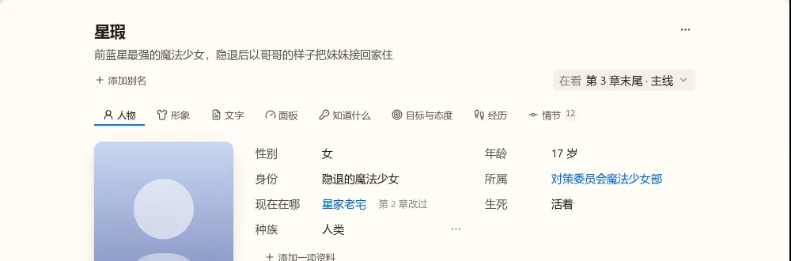
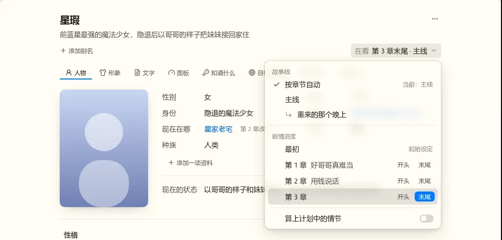
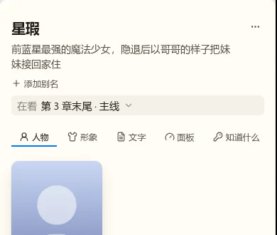
只有主线时不写线；算上计划时写“· 含计划”；固定看一条分支线时整块变成强调色。
B 两个控件，同一种样子、各带名字
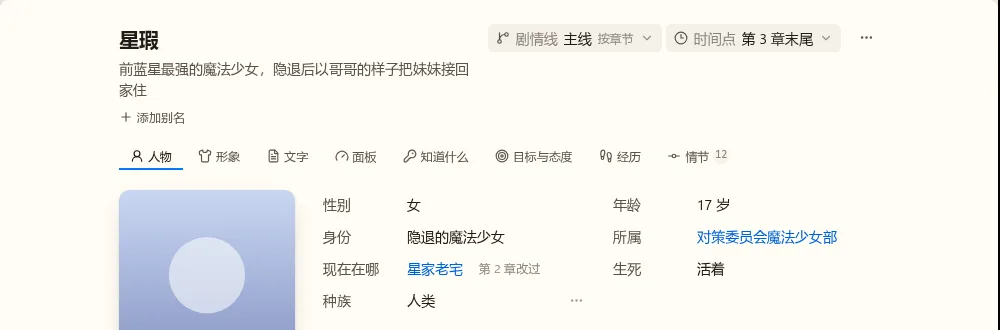
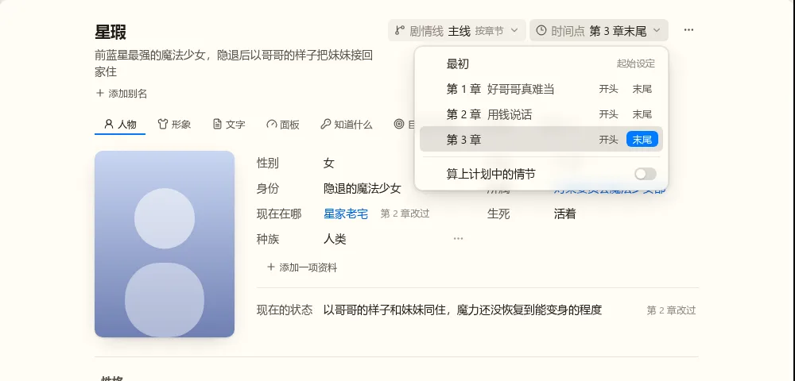
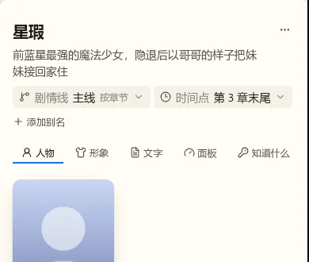
位置不变，改动最小；还是两个控件，各写一个名字。
改一个值用哪种编辑控件？
推荐 B：卡住人的是“改设定还是剧情里变了”，B 把两项写成改完以后的样子（“设定改成 18 岁 / 第 3 章里变成 18 岁”，下面一行说之前怎样），不用懂这两个词；比 A 高两行，换来不用猜。
A 紧凑浮层，意图写成落点
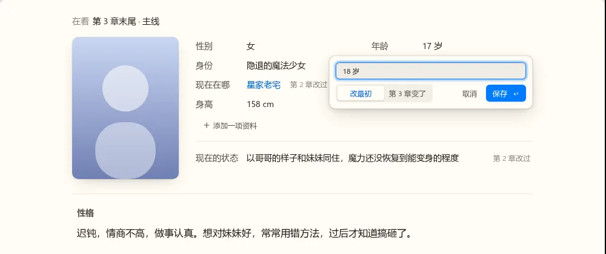
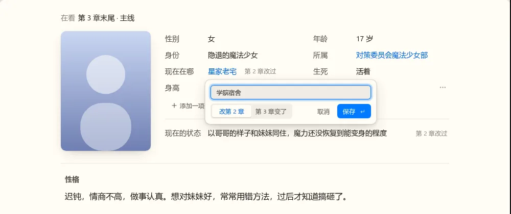
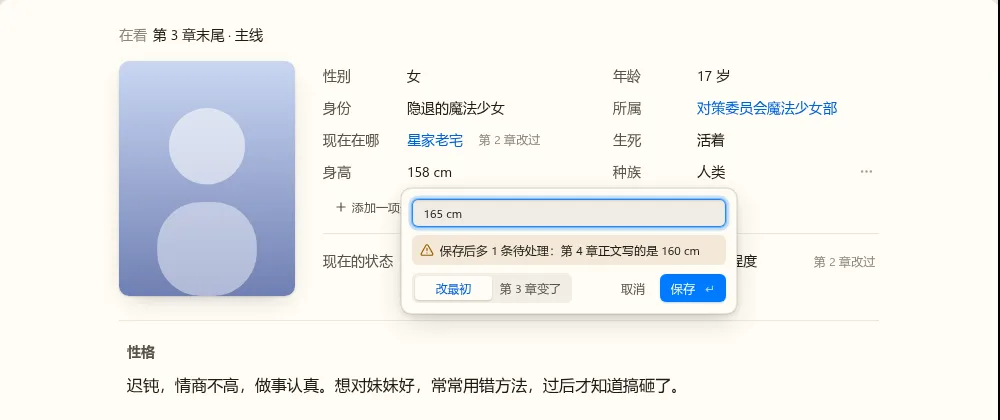
两项写成落点：改最初、改第 2 章、第 3 章变了；没有别的变化时不写预览，有影响才出一条提示。
B 浮层里两项写成结果
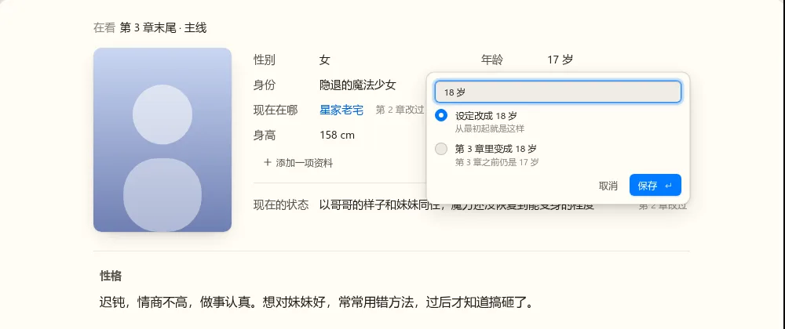
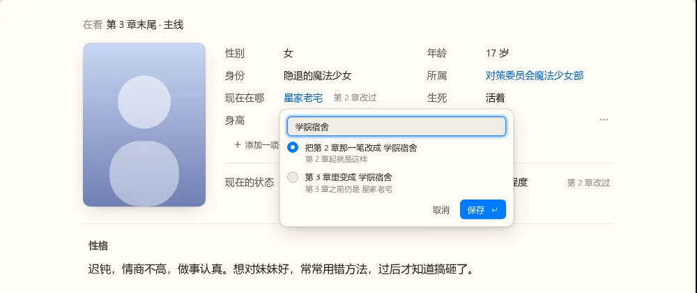
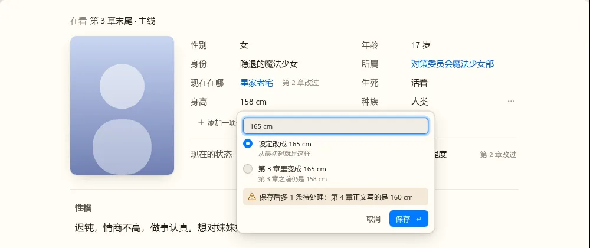
两项各一句改完以后的样子，下面小字说之前怎样；看“最初”时没有这一问。
长文字（性格、背景这类）改的时候盖在上面，还是在原处展开？
推荐 B：长文字要看着上下文改，浮层会盖住下一节；在原处展开、下面让开，和这一段本来的位置一样。代价是和短项不是同一种控件（设计语言第 4 条“改一个值处处同一种浮层”要改一句）。

编辑浮层用不透明的面，还是和菜单一样的玻璃？
推荐 A：编辑浮层压在密密的字上，玻璃把底下的字和蓝色块透上来，看着脏；它要人盯着填，用不透明的面。菜单那些一闪而过的浮层仍是玻璃。
直接修，不用答
| 哪里 | 改成什么 |
|---|---|
| 建议值（性别这类） | 打开时列出全部，当前值打勾，开始打字才筛（现在按当前值筛，只剩“不明”一项）；列表放进编辑浮层里，不再是第二层浮层、不盖住下面那一行 |
| 看“最初”时改值 | 不问“改设定 / 剧情里变了”（只能改设定） |
| 编辑浮层的位置 | 不越出编辑区（现在改年龄的浮层越过右边界盖到侧栏）；右边一栏的项浮层靠右对齐 |
| 主色 | 编辑浮层里只有“保存”一处主色；意图的切换用浅轨道、浮起的选中块（现在选中的“改设定”是实心蓝，比保存还重） |
| 多行输入 | 按内容长高，不露浏览器的拉伸角；保存写明 Ctrl+回车 |
| 线的菜单 | “跟着章（此刻：主线）”改说“按章节自动”，右边小字“当前：主线”；分支线前加从属的折线图标；菜单宽度随内容，不截断 |
| 时间点菜单 | 一章一行，开头、末尾是这一行里的两个小按钮（章标题不再写两遍）；“最初”旁写“起始设定”；“算上计划中的情节”是开关 |
| 状态栏的“在看” | 和页头同一说法（选 A 时写“在看：第 3 章末尾 · 主线”这一类） |
| 窄屏横排分页 | 右缘渐隐，看得出右边还有分页（现在正好切在一页的边上，像是只有这几页） |
现状
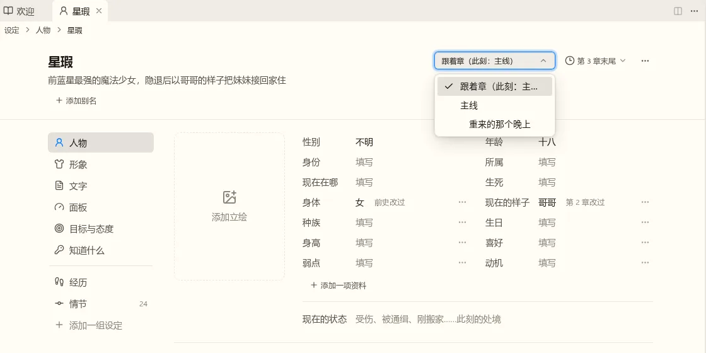
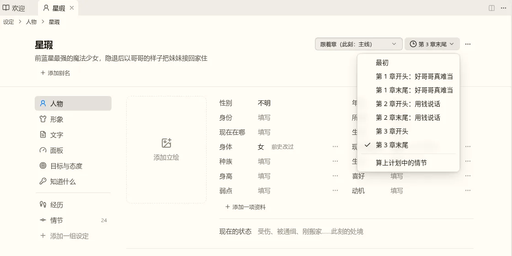
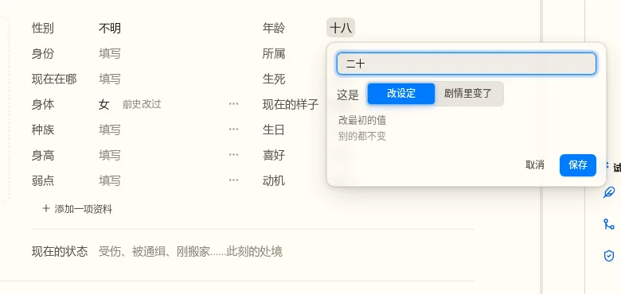
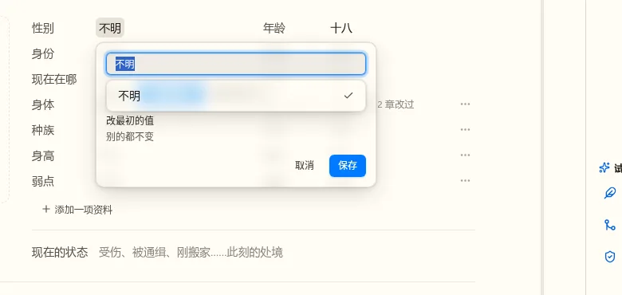
已定
- 分页宽时在内容左边竖排，窄了横排；横排放不下时在分页条里滑动，每页写名字（第 1 轮、2026-11-26）
- 保存后的提示 6 秒后自己收起，指着或焦点在里面时不收；提示写记在哪（第 1 轮、2026-11-26）
- 初值的位置叫“最初”；提示按钮叫“还原”（2026-11-26）
- 每组设定各一个分页；改一项时就地改，不用页顶的确认条（t41 第 1 轮）